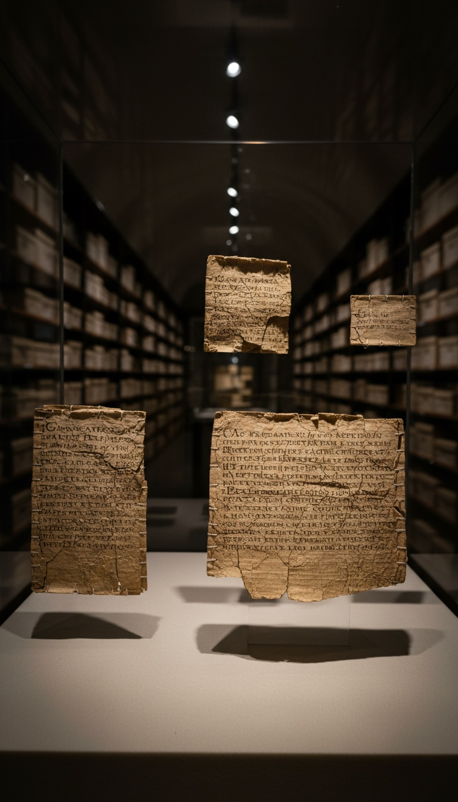

Colossians 4:16 orders you to read a specific letter. The institution that canonized that instruction cannot produce the letter.
The verse is not metaphor and it is not rhetorical. The author writes: "After this letter has been read among you, see that it is also read in the church of the Laodiceans, and that you in turn read the letter from Laodicea." Two instructions. Two letters. One survives. One does not. The gap between those two facts is the subject of this article.

The Command That Cannot Be Fulfilled
Laodicea was a real city. It sat in the Lycus River valley in what is now western Turkey, roughly 160 kilometers east of Ephesus, inside the Roman province of Asia. A wealthy textile and banking hub with a documented Christian congregation. Revelation 3:14 addresses it directly. The author of Colossians addresses it directly. Two separate New Testament texts confirm the same congregation existed and received correspondence.
Colossians 4:16 gives a logistics instruction. The recipients are told to physically exchange documents with the Laodicean church. That exchange requires two objects. Both are treated as already existing at the time of writing. One of those objects does not appear anywhere in the archaeological or documentary record of the next four centuries.
Four Centuries Without a Single Quote
No early Christian writer quotes the Laodicean letter. Not Ignatius of Antioch, writing around 110 AD and deeply familiar with the Pauline corpus. Not Justin Martyr, writing around 155 AD and cataloguing Christian texts. Not Irenaeus of Lyon, writing around 180 AD and assembling the first coherent defense of the Pauline canon against Marcion.
The Muratorian Fragment, a canonical list dated to the late second century and held by the Ambrosian Library in Milan, mentions a letter "to the Laodiceans" directly. It does not quote it. It warns against it. The text calls it "a letter forged in Paul's name to further the heresy of Marcion of Sinope." That is not a citation. That is a warning label attached to whatever was circulating under that title by 170 AD.
Marcion of Sinope had assembled his own canon around 140 AD, centered entirely on Paul. He carried a version of a Laodicean letter. What Marcion held and what the Latin-speaking church eventually produced six centuries later are not the same document. Neither matches anything the early church was willing to quote. The trail of the actual letter runs into the second century and stops.
What Jerome Wrote in 393 AD
Jerome compiled the Vulgate, the Latin Bible that served as the official text of the Western church for over a thousand years. In 393 AD he also wrote "De Viris Illustribus," a catalogue of Christian writers and texts. He addresses the Epistle to the Laodiceans and records his verdict in three Latin words: "ab omnibus explodatur." Rejected by everyone.
Jerome's exact phrasing is the receipt. "Ab omnibus" means by all, by everyone, without stated exception. He is not describing a minority opinion or a contested evaluation. He is describing a consensus, using a word that in classical Latin carried the connotation of being driven off stage by an audience throwing things. That is the word Jerome chose for a document his compiled Bible still points to.
Jerome catalogued it, noted the rejection, and did not resolve the contradiction. The man who assembled the text of your Bible acknowledged that one of its cross-references pointed at a document the church itself had already driven off the stage. He left the cross-reference in.
The author of Colossians orders you to read a letter. Jerome says it was rejected by everyone. Your Bible still contains the order.
The Latin Forgery and Its Tell
What does exist is a short Latin text, twenty verses, called the Epistola ad Laodicenses. It surfaces in Latin manuscript tradition around the sixth century. No Greek original has ever been found. No Syriac version. No Coptic fragment. No papyrus scrap from Egypt. The entire textual tradition runs through medieval Latin manuscripts.
J.B. Lightfoot, the 19th-century Cambridge scholar whose 1875 commentary on Colossians remains a standard academic reference, analyzed the Latin text and published his findings. What he documented is not a letter. It is a collage. The twenty verses pull fragments from Galatians, lift phrases from Philippians, return to Galatians again, and close with language lifted directly from 2 Timothy. Every line traces back to a Pauline letter that already existed and was already in circulation. The forger had a library. The forger did not have the original.
Two formal ecclesiastical councils evaluated it and issued canonical decisions without it. The Synod of Laodicea in 363 AD issued a list of accepted New Testament books. The Epistle to the Laodiceans is not on it. The Council of Carthage in 397 AD confirmed the New Testament canon used by the Western church. The Epistle to the Laodiceans is not on it. Both decisions were rendered centuries before the Latin forgery appeared in manuscript tradition. The councils were not rejecting the Latin text. They were noting that nothing acceptable existed under that title.
The Authorship Problem Colossians Creates
Colossians itself carries documented authorship problems. Seventeen words in the letter appear nowhere else in the Pauline corpus. The theological vocabulary shifts in ways that New Testament scholars at Harvard Divinity School, Oxford's Faculty of Theology, and the University of Tubingen have independently catalogued. The Christology embedded in Colossians 1:15-20, describing Christ as the firstborn of all creation through whom everything was made, is more fully developed than anything in the letters whose Pauline authorship is not academically contested: Romans, 1 and 2 Corinthians, Galatians, Philippians, 1 Thessalonians, Philemon.
The majority of academic New Testament scholarship treats Colossians as pseudepigraphical. Written in Paul's name. Written after Paul was dead.
If Colossians was written after Paul's death by someone writing in Paul's name, the reference to the Laodicean letter serves a specific function. It manufactures the impression of a correspondence network that cannot be audited. The letter you are instructed to retrieve does not exist. The instruction to retrieve it does exist. That asymmetry is exactly the structure a forger inserting credibility markers into a text would produce. A living correspondent can be questioned. A missing letter cannot push back.
What the Canon Is Actually Telling You
The New Testament contains a directive to read a document. The institution that compiled the New Testament cannot produce that document. The institution has been aware of this problem since at least the second century, when the Muratorian Fragment addressed it by labeling the only available candidate a Marcionite forgery. Jerome documented the consensus rejection in 393 AD and preserved the cross-reference anyway. The councils of 363 and 397 drew their canonical lines and left the gap unfilled.
The options on the table have not changed since those councils met. Either Paul wrote the Laodicean letter and the same church that preserved seven undisputed Pauline letters, the Gospels, and the book of Revelation somehow lost this one. Or someone wrote Colossians in Paul's name and inserted a reference to a letter that never existed, knowing the reference could never be checked. Both possibilities are documented in the ecclesiastical and academic record. The church has not resolved this officially. The verse sits in Colossians 4:16 with the same force it had in the first century, pointing at nothing.
Colossians 4:16 has been in your Bible for sixteen hundred years. The document it orders you to read has been missing for all sixteen hundred of them. Jerome noted the rejection in 393 AD and included the order anyway. The councils drew their canonical lines without solving the gap. The Latin forgery that appeared six centuries after the fact was assembled from parts of letters that already existed, carried no Greek ancestor, and was rejected by every council that looked at it.
The question that follows from this is not whether one letter got lost. Correspondence from antiquity survives in caves, in monastery walls, in sealed jars in the Egyptian desert. The Dead Sea Scrolls sat undisturbed for two thousand years. If the Laodicean letter existed and circulated among the same communities that preserved every other Pauline text, something specific happened to it and only to it.
Tell me what you think that something was.
Before you go
7 books the Vatican doesn't want you reading. Free PDF — the texts they cut, with sources. Joined by 140+ Inner Circle members.
No spam. Unsubscribe anytime.
Go deeper
The Hidden Canon, Vol. I — Enoch. Jubilees. Thomas. Mary. Judas. 90 pages, 14 chapters, every receipt cited. The books your Bible quietly removed.
Read the Canon →Books that informed this investigation
As an Amazon Associate, Hidden Epoch earns from qualifying purchases. Cost to you: nothing.
Research safely
The VPN we use to research without being tracked. First 3 months free.
Get NordVPN →